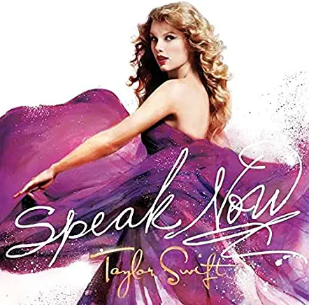
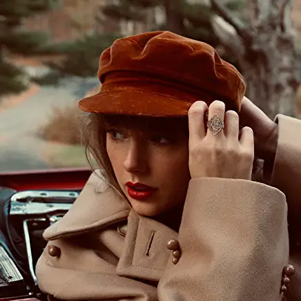
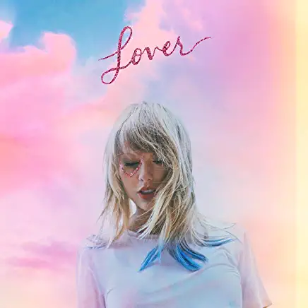
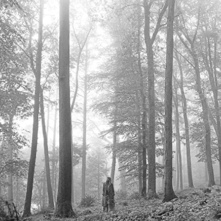
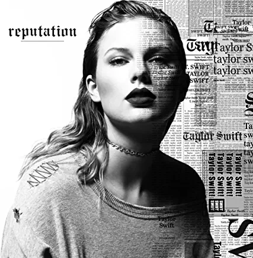
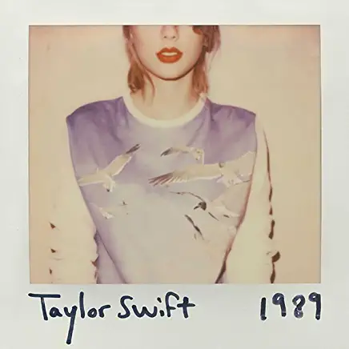
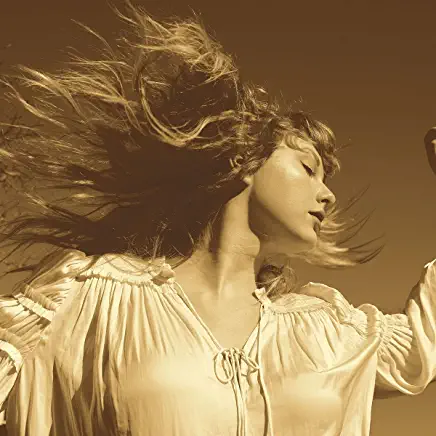
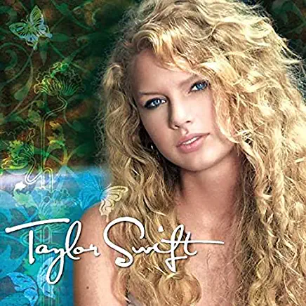

An exhaustive ranking of all of Taylor Swift's discography, for the seasoned Swiftie or any new listeners left out there. For those lucky enough to snag tour tickets in presale, this lineup is for you. This ranking takes into consideration the (Taylor's Version) albums, and was created prior to the "Midnights" album release.
"Speak Now" is easily Swift's best work to date. It stands the test of time, and is some of her best-written music of all time. 9-year-old me heard "Mean" for the first time in the car and never recovered. All love to this album, all hate to John Mayer.
"Red" is a perfect fall album. It is home to the original "All Too Well" track and to one of her top five songs of all time, "Holy Ground." We support Swift's right to own her own music, and "Red (Taylor's Version)" holds some of her all-time best vault tracks so far.
"Lover" is a sunsets album. It was designed to be listened to on a plane. It is home to one of her worst songs of all time ("ME!") but also to some of her best ("Cruel Summer," "False God") which saves it from dropping to the middle of the pack.
"Folklore" and "Evermore" can't be separated. They are both representations of musical genius. These are the albums I point to when I say Swift is one of the best writers of our time. I'm not sure there are better-written albums on the market with a sound and story like these two. These were a phase in Swift's musical journey with a unique sound we won't ever get from her again. "Champaign Problems," "The Lakes," "Right Where You Left Me" and "Invisible String" are just a few of her best-written songs that you can find on these sister albums.
"Reputation" is a dichotomy in and of itself. It's embarrassing, and it's fantastic. The fake-rapping, the absolute no f*cks given, the Joe Alwyn season of her life — chef's kiss. "Getaway Car" is her best track off this album, followed by others like "Look What You Made Me Do," a radio hit, and "I Did Something Bad." The performance of this album, the disappearing for months, the drama ... you can't get anything else like it.
"1989" is a total pop sell-out, making it one of her most popular overall. However, I think the writing is weaker than the albums above. The Harry fans are what get the album so much love, but the album gives an inaccurate representation to her music as a whole. However, my top songs from the album ("All You Had To Do Was Stay," "Wonderland," "Wildest Dreams" and "I Know Places") are strong musical productions.
"Fearless" is a strong album for where Swift was in her career in 2008. Her writing only got stronger from here, but it's a sweet album to look back on now, which is why her re-recorded album performed so well when released. Classics like "Love Story" and "The Way I Loved You" came from this album, as well as vault track "Mr. Perfectly Fine."
"Taylor Swift" hooked me when I was five, somehow. "Teardrops On My Guitar" and "Tim McGraw" can't be forgotten. However, the fake country accent can't be forgiven. 2/10.
